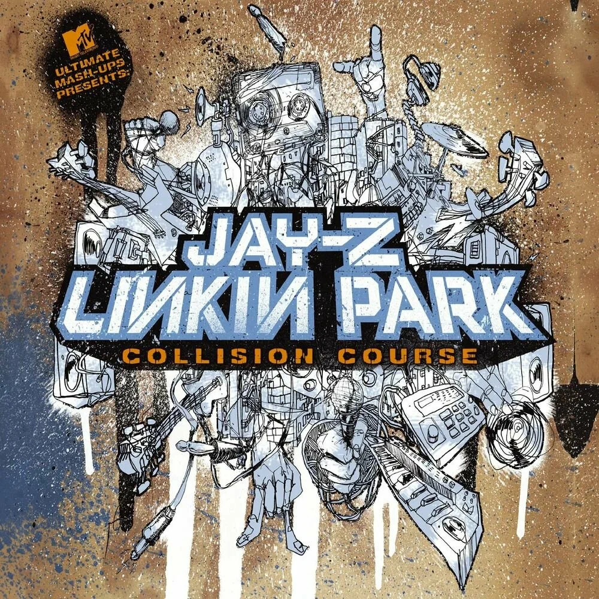
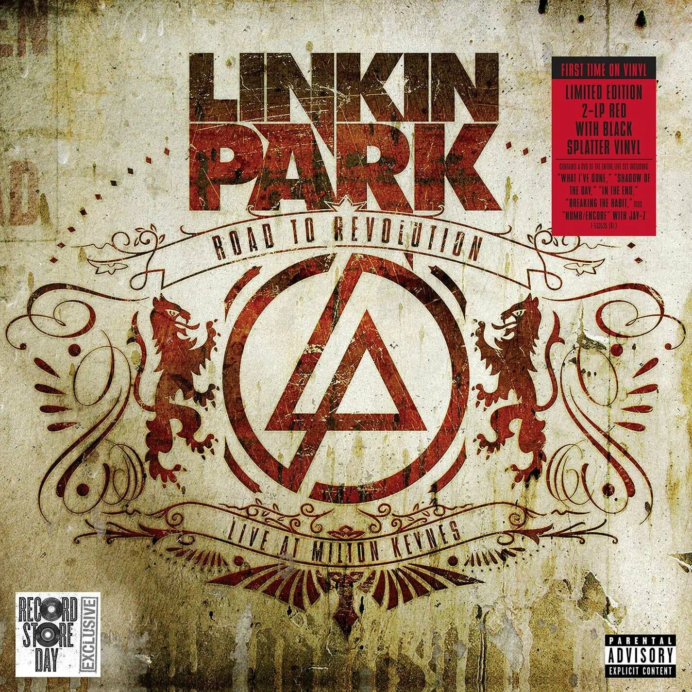
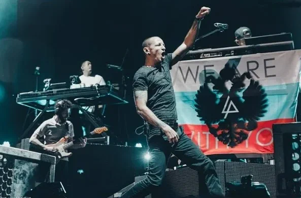
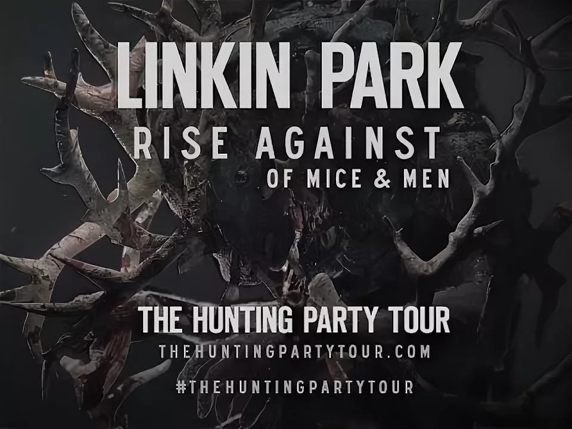
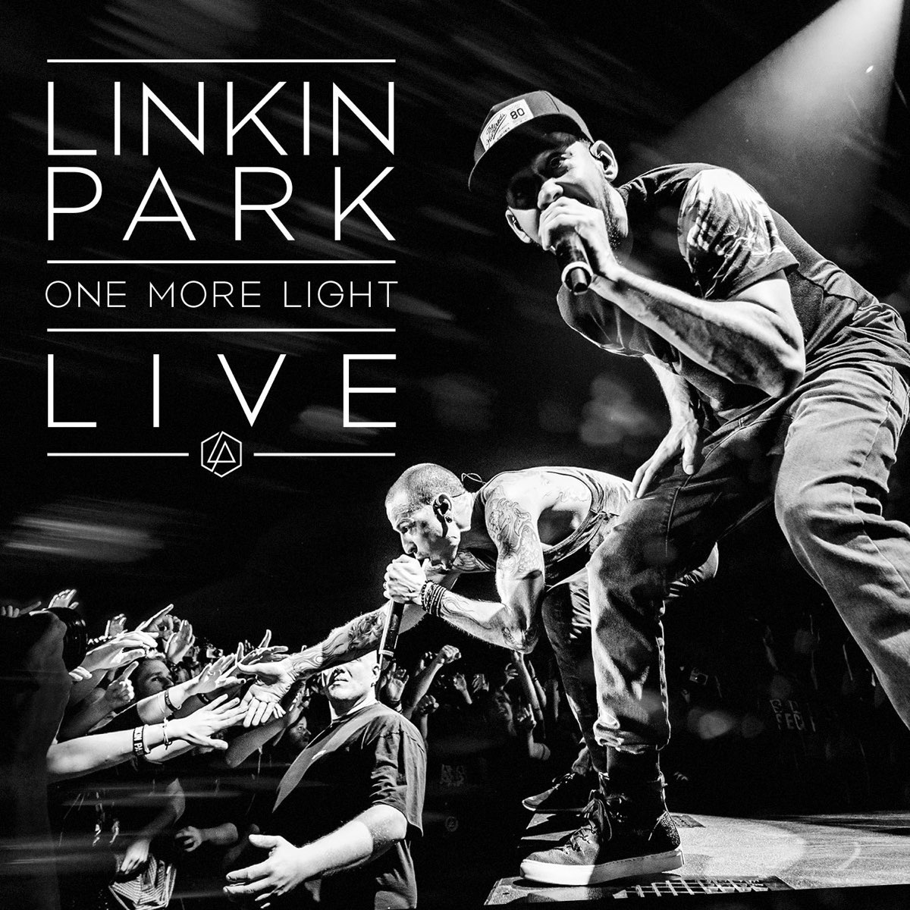

Главная | Общая информация | История | Дискография | Фильмография | Источники | Заказать | Контакты
| Год | Русское название | Оригинальное название | Постер | Тип |
| 2004 | Коллаборация с Jay-Z | Collision Course |  | Концертный фильм |
| 2007 | Дорога к революции | Road to Revolution: Live at Milton Keynes |  | Концертный фильм |
| 2011 | Линкин Парк в Москве | Linkin Park: Live in Moscow |  | Концертный фильм |
| 2015 | Охотничья вечеринка: Тур | The Hunting Party: The Tour |  | Документальный фильм |
| 2017 | Еще один свет | One More Light: Live |  | Концертный фильм |
| Год | Песня | Режиссер | Награды |
| 2000 | One Step Closer | Грегори Дарк | MTV Video Music Award номинация |
| 2001 | Crawling | Билл Беннетт | Грэмми - Best Hard Rock Performance |
| 2003 | Numb | Джо Хан | MTV Europe Music Awards |
| 2007 | What I've Done | Джозеф Хан | MTV Video Music Awards |
| 2010 | The Catalyst | Джо Хан | Лучшие спецэффекты |
| 2017 | Heavy | Тим Фокс | Сотрудничество с Kiiara |
© Все права защищены. И.И. Иванов, 10А класс. 2024.